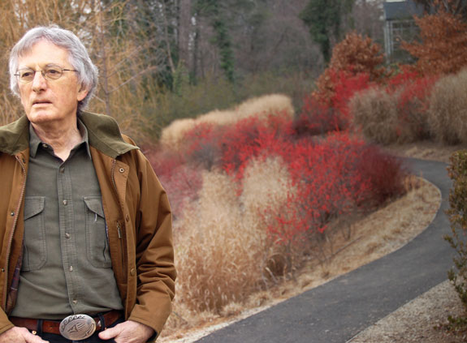

-
Fresh fire: on Charles Wright and Robert Pinsky
by Laura Kolbe April 12, 2011
How is a life’s work gathered? Unlike a novelist, a poet can often fit his or her past work between two covers, in what we have come to call an anthology – from the Greek for a collection of flowers, a bouquet. For the young Victorian with limited resources to add frisson to a respectable relationship, there existed a “language of flowers,” whereby the choice of bouquet could convey specific symbolic meaning: chrysanthemums signified love, while their close cousins the marigolds signified grief and loss. Poets, too, send readers messages — coyness, pride, regret — by their selection and presentation of their work. Like amorous gifts, anthologies are as much about self-definition as they are about pleasing someone else.
Midway through his career, W.H. Auden assembled a 1945 volume, The Collected Poetry of W.H. Auden, which presented sixteen years of work, not in chronological order, as was custom, but alphabetically by first line. A decade later, he explained his audacious choice: “I was still too young to have any sure sense of the direction in which I was moving, and I did not wish critics to waste their time, and mislead readers, making guesses about it which would almost certainly turn out to be wrong.” Besides obscuring a stylistic trajectory, Auden prevented readers from interpreting their progress as a master narrative — in this case, a story of consecutive relationships, trans-Atlantic emigration, and ever-shifting political and religious beliefs. Unsurprisingly, Auden similarly left romantic speculation and pseudo-scholarly reorderings of Shakespeare’s sonnets to “the foolish and the idle”, insisting that “it is best to accept the jumble we have been given.”
Near the other end of the spectrum is Wallace Stevens, who asserted that his Collected Poems of 1954 represented the “whole of Harmonium” – Harmonium being his first volume, published in 1923. For Stevens, every subsequent poem was in some sense a buttress or an addendum to the earlier work. Poets and anthologists have a choice, then, whether to acknowledge their beginnings as also their bedrocks in style and ambition.
Charles Wright and Robert Pinsky, two of the better-known American poets of their generation (Wright was born in 1935, Pinsky in 1940), have both recently released anthologies of their work. The poems of Wright’s Bye and Bye: Selected Later Poems are chronological, more Stevensian than Audenesque in this way. Pinsky invents a third way, reversing the chronology of his Selected Poems and upending expectations about the gradual acquisition of mastery. Instead, the recent work is cast as the star. The early poems arrive towards the back of the book almost as explanatory notes.
Charles Wright has been an extraordinarily prolific poet, publishing a book of poems roughly every other year for the past 40 years. Several of Wright’s poems repeat the word “pentimento” – an oddly ornate choice, considering that the other words he uses with litaneutical frequency tend to be leaner and plainer: sky, grass, light, creek, moon, book. Pentimento, which in Italian means repentance, lands in English as a visible trace of an earlier artistic decision or mistake. (One of the stronger arguments against restoring old paintings to their “original state” is that restorers can misinterpret pentimenti as the artist’s final compositional choices, and vice versa.) Wright’s poetic gyre is tight and small, returning again and again to the same settings and subjects — the Appalachian South, Italy, the cycle of the seasons, the presence-in-absence of God — so every poem seems to modify a gesture or opinion voiced five or six poems back, like a bell tower’s helical staircase that keeps returning the ascender to, say, the tower’s east face, but elevated slightly higher each time.
Such incremental changes in level gradually yield a very different view. For example, Wright’s poetry has almost always restricted itself to nature, geography, and the struggle for spiritual understanding. The voice of the speaker is often the only human presence in the poem. Where are the other seven billion of us? a reader might wonder. Wright’s 1982 volume Country Music: Selected Early Poems offered a callous answer in its epigraph, taken from Hemingway’s The Green Hills of Africa: “The country was always better than the people.” Wright’s early work, however, was scattered with images of pilgrimage and hermitage, suggesting that the isolation of the poem’s speaker was not based on a devaluation of “the people” nor an overvaluation of “the country” but rather a special strain of love that requires great distance to test its strength and range. By 2004’s Buffalo Yoga, Wright offered another explanation for the solitude of his poems, addressing the still-life painter Giorgio Morandi as a kindred spirit:
You, of all the masters, have been the secret sharer
Of what’s most important,
exclusion
…
Scrape and erase, scrape and erase
…
You looked as hard as anyone ever looked,
then left it out.(Bye-and-Bye, 121, 122)
In 2007’s Littlefoot, Wright tweaks the metaphor, but so slightly that Morandi’s specter, the old pentimento, still informs the scene: instead of comparing the poem to painting, Wright alludes to the shutter speed of early photography, so slow that any moving person in the field of view was effectively rendered invisible:
Sunday’s the poem without the people, all disappeared
Before the shutter is snapped.
Rainy vistas, wet-windowed boulevards, empty entrances.
Across the bridge, dissolute, one-armed,
Monday stares through the viewfinder,
a black hood over his head.(Bye-and-Bye 205)
The difference between the two metaphors is one of agency: a photographer might be unable to control whether or not people leave his field of view before he has captured their image; a painter like Morandi has made exclusion into the highest form of choice.
Other layers of ever-adjusted pentimenti pose a different question: why do we love nature more than nature loves us? In 2002’s A Short History of the Shadow, Wright asserts that there exists some kind of reciprocity and mutual need: “There is so much that clings to us, and wants to keep warm.” In Scar Tissue four years later, Wright dismisses the earlier thought as wishful thinking:
The shadowy overkill
of the evening sun going down.It seems, somehow, to ignite us into a false love for the physical world,
Our mouths full of ashes, our mouths full of fresh fire,
phoenix-like(Bye-and-Bye 159)
Then again, maybe it is our too-rapt, too-devout attention that makes Nature cold to us:
For over 30 years I’ve looked at this meadow and mountain
landscape
Til it’s become iconic and small
And sits, like a medieval traveler’s triptych,
radiant in its disregard.(Bye-and-Bye 14)
This is a variation of the pathetic fallacy expressed earlier with the natural world “wanting” to embrace us and huddle in our warmth, suggesting that if we only contemplated nature differently — not as an icon, but as an unspecified something-else — then maybe it would not have such “disregard” for us, such flattened preciousness.
In Sestets (2009), the keening neo-Romanticism of fire-breathing, ash-smudged mouths has given way to a stripped-down ruefulness. Wright has moved beyond yearning for, as Robert Frost put it, “counter-love, original response.”1 He writes:
I always find it strange – though I shouldn’t – how creatures don’t
care for us the way we care for them.
Horses, for instance, and chipmunks, and any bird you’d name.
Empathy’s only a one-way street.And that’s all right, I’ve come to believe.
(Bye-and-Bye 341)
Brief quotations cannot convey the effect that Wright’s poems have in the aggregate, piling up, jostling, correcting, and examining one another. Some poets’ work is best savored in small, slow doses: a few poems per sitting. Wright’s poems are best taken in book-length draughts, or better still, in thick anthologies like Bye-and-Bye. Reading these creates the dizzying sensation of having lived for centuries, and only partly because of Wright’s tendency to note the time of day, day of the week, and month of the year in many of the poems. Seasons cycle and spin back on themselves like pinwheels. Like one of the souls in Dante given over to an eternal and repetitious task, the voice of the poems seems compelled – out of joy, sadness, habit, or all three – to describe spring each time it comes, no matter how many times it’s been done before. This recurrence is symptomatic of the poet’s wariness of overreaching:
The more you say, the more mistakes you’ll make,
so keep it simple.(Sestets 28)
The move towards repetition and simplicity also expresses the hope that sufficient weight can force the self into something greater than its raw materials, “so that our hearts end up like diamonds, and not roots.” Diamonds and roots are both woven from skeins of carbon, but time and pressure can turn the merely tough into the luminous.
A former Poet Laureate and current poetry editor at Slate, Pinsky could hardly be farther from Wright in his attitude towards shared versus solitary experience. Devoted in large part to exploring the intersections and disjunctions of poetry and public life, his work asks: Where are we, and who are our companions, when we participate in poetry?. While Poet Laureate, Pinsky established the Favorite Poem Project, which organizes events and recordings in which Americans, both celebrated and obscure, read aloud their favorite poems and discuss the personal significance the poems have had for them. (Forty-five short videos of such readings are available for free on the project’s website.
Pinsky explained the inspiration for the Favorite Poem project in a 1999 interview2:
My good friend Frank Bidart and I were watching a Willie Nelson concert tape. At the end, the audience is tearing at their garments and screaming and weeping, and Willie is on stage doing the final number and the credits are rolling. And Frank said, “Now, that’s what a poetry reading should feel like.”
(By contrast, one of my poetry teachers in college warned us not to recite any of Wright’s work within his earshot when he came to give a reading; some students had done this several years earlier and, according to my teacher, Wright had been so overcome by embarrassment that he cancelled the reading and left. The story is probably three-fourths apocryphal, but still illustrative.)
For Pinsky, poetry is a partly-tamed chimera, with a body equal parts civic engagement, artful performance (on the page or at the microphone), and raw ecstasy. As his Selected Poems demonstrate, however, his work has always warned of the vicious and monstrous side of the crowd and of shared ecstatic experience, even when these occur under the aegis of poetry. In 2007’s Gulf Music he writes:
I was in the big tent when the guy read his poem about how the Jews
Were warned to get out of the Twin Towers before the planes hit.The crowd was applauding and screaming, they were happy — it isn’t
That they were anti-Semitic, or anything. They just weren’t listening. OrNo, they were listening, but that certain way. In it comes, you hear it, and
That selfsame second you swallow it or expel it: an ecstasy of forgetting.(“The Forgetting,” Selected Poems 23)
The scene recounted above seems like an eerie fulfillment of the vision of madness he wrote in his first book, Sadness and Happiness (1975), in which he retells Euripides’ description of the Bacchae, female followers of Dionysus made feral by the god’s influence:
… with their breasts
Swollen, their new babies abandoned, mothersAmong the Bacchantes nestled gazelles
And young wolves in their arms, and suckled them;
You might see a single one of them tear a fat calfIn two, still bellowing with fright, while others
Clawed heifers to pieces; ribs and hooves
Were strewn everywhere; blood-smeared scrapsHung from the fir trees; furious bulls
Charged and then fell stumbling, pulled down
To be stripped of skin and flesh by screaming women…In Greek tragedy as in slam poetry, the arts are not wholly resistant to barbarity. Twenty-first century poetasters can be brutal and brainless in a single breath; the god Dionysus, patron of hymns, dancing, and the wild, irrational side of the aesthetic impulse, also presided over atrocity.
In its more benign manifestation, the crowd-loving, agoraphilic nature of poetry “in the big tent” regularly leads Pinsky to attempt long, garrulous poems that dart around the globe or among an enormous cast of characters. (I counted 17 places in the poem “The Figured Wheel” and 39 people in “An Alphabet of My Dead.”) This capaciousness risks spreading the poet’s powers and attention too thin. Often in Pinsky’s longer poems, individual lines have little luster and seem only to be in service of the whole rather than having significant value or beauty on their own. Line breaks lose their sense of necessity and feel arbitrary; at times one wonders whether the sentences would not be better off as prose.
“The Forgetting,” quoted previously, is one example: all the lines but the last do not feel like “lines” at all, and the diction feels baggy and unedited (“when the guy read his poem about how…” “it isn’t / That they were anti-Semitic, or anything…”). Many of the best American poems have employed the idiom of casual speech, but the difficult trick is making art of the way we talk, rather than slavishly reproducing even the uninspired constructions of everyday speech.
Pinsky achieves his best work fighting against his instinctive inclusivity and finds an almost spiritual austerity in short, drumming lines meditating upon a single scene. His poem “The Saving,” which describes a camping trip of fathers and sons, is exemplary:
…Willful, hungry, and impatient,
Nose damp in the sudden chill,
One of the smaller, scrawnier boys
Roasting a chunk of meat
Pulled it half-raw from the coals,
Bolted it whole from the skewer,
And started to choke and strangle –
Gaping his helpless mouth,
Struggling to retch or to swallow
As he gestured, blacking out,
And felt his father lift him
And turning him upside down
Shake him and shake him by the heels,
Like a woman shaking a jar –
And the black world upside down,
The upside-down fire and sky,
Vomited back his life,
And the wet little plug of flesh
Lay under him in the ashes…“The Saving” bears a strong if inverted resemblance to the poetry of the 17th century Anglican poet-priest George Herbert, in particular to Herbert’s most famous poem, “Love (III)”:
Love bade me welcome; yet my soul drew back,
Guilty of dust and sin.
But quick-eyed Love, observing me grow slack
From my first entrance in,
Drew nearer to me, sweetly questioning
If I lack’d anything.“A guest,” I answer’d, “worthy to be here.”
Love said, “You shall be he.”
“I, the unking, ungrateful? Ah, my dear,
I cannot look on thee.”
Love took my hand and smiling did reply,
“Who made the eyes but I?”“Truth, Lord, but I have marr’d them: let my shame
Go where it doth deserve.”
“And know you not,” says Love, “Who bore the blame?”
“My dear, then I will serve,”
“You must sit down,” says Love, “and taste my meat.”
So I did sit and eat.In Herbert’s poem, written for an overwhelmingly Christian society, the narrative is both familiar and unsettling: Jesus offers his body and blood as spiritual sustenance to his followers, a ritual that becomes intensely personal in the individual taking of communion. But surely even Herbert’s contemporaries must have been unnerved by his simple, unflinchingly literal depiction of a Eucharistic exchange: there is an actual place setting for one, and a host (in both senses) who is also the meal. A nonbelieving Jew, Pinsky is fascinated by, and generous towards, religion, writing a poem that takes up the rhythm of Herbert’s even-numbered lines (three strong beats to the line), but “the saving” is not that of the soul but of the body, and the “meat” is the danger, not the means of salvation. The myth-making quality of Pinsky’s stark poem, stripped of all but the totemic essentials, makes it both retort and homage to its Christian predecessors: in this myth, the father-savior rescues the boy by loosing the “wet little plug of flesh” and sending it back into the ashes. Love removes the ill-considered atavism that sticks within us. It lets us breathe.3
If all of this sounds a bit too self-serious — it’s a Boy Scout barbecue, after all — both Pinsky and Wright have been in the poetry game long enough to be forgiven the cavalier wryness that in a younger poet would come off as smug, fashionable ennui. Again from Wright’s Sestets — one of his best volumes — here is a précis of death in a poem called “Hasta la Vista Buckaroo”:
So many have come and gone, undone
like a rhinestone cowboy,
Dazzle and snuff, Lord, dazzle and snuff,
In a two-bit rodeo.(Bye-and-Bye 314)
“Description’s the Art of Something or Other,” a dozen sestets later, takes up the same tone:
Description is expiation,
and not a place to hunker down in.
…
As though whatever we had to say could keep it real.
As though our words were flies,
and the dead meat kept reappearing.The last image, one of Wright’s most original, proposes that we write simply in response to what’s there. Dead meat is the world of phenomena, furnished for us, not entirely benignly, by a universe that has a seemingly endless supply. “Dead meat” also suggests a boyishly violent meaning in American slang, marking the chosen victim, the one bound to lose the playground brawl. And the phenomenal world is, in some sense, bound for a similar fate at the hands of language. The poet’s lot, however, is to return to the same territory again and again, making the familiar real once more. A generous anthology grants us the luxury of watching the poet’s back disappear down the road just when we hear him mount the porch and knock upon the door.
- From Robert Frost’s “The Most of It”:
He thought he kept the universe alone,
For all the voice in answer he could wake
Was but the mocking echo of his own
From some tree-hidden cliff across the lake.
Some morning from the boulder-broken beach
He would cry out on life, that what it wants
Is not its own love back in copy speech,
But counter-love, original response. [↩] - “Robert Pinsky, Literary Celebrity.” Interviewed by Anne-Marie Cusac. Utne Reader, September-October 1999. [↩]
- Wright, too, seems to refer to Herbert’s wonderfully generative poem in the final lines of his “Last Supper”:
As our fathers were bold to tell us,
it’s either eat or be eaten.
Spring in its starched bib,
Winter’s cutlery in its hands. Slice and fork. [↩]
- From Robert Frost’s “The Most of It”: